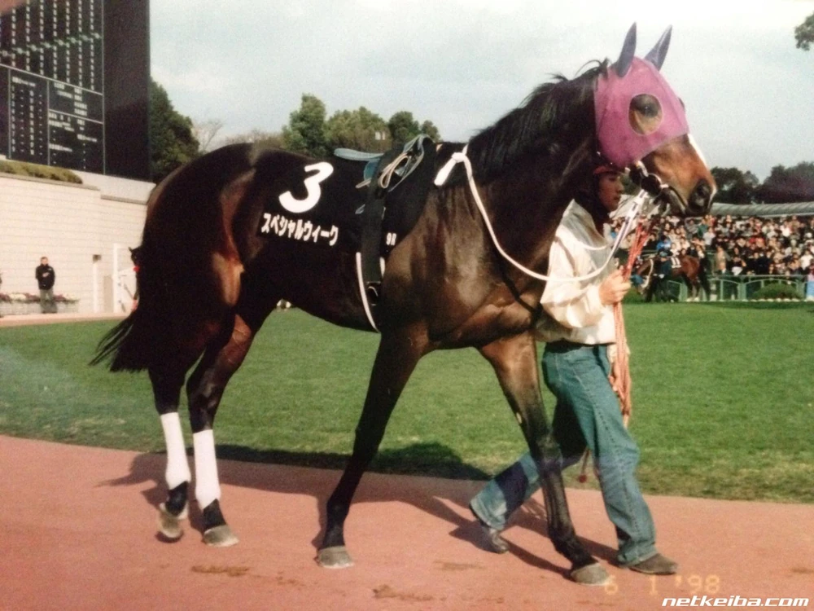

“The dream that remained till the end, winning the Japanese Derby!
Yutaka Take, and Special Week have grasped the dream!”
―1998 Japanese Derby, by Masaharu Miyake (Fuji TV)

Special Week
Special Week was a racehorse that competed in the late 1990s. Born in 1995, he was known as a member of the Golden Generation, and fought against many strong rivals. Among his most remarkable accomplishments, Special Week won the 1998 Japanese Derby, as well as both the 1999 Tenno Sho Spring and Autumn, and the 1999 Japan Cup. Special Week was also a great studhorse, with G1 winners among his children, grandchildren, and great-grandchildren. Of note are his daughters Cesario and Buena Vista, both accomplished racers who were descended by later G1 winners.
Quick Trivia
- Named after his father Sunday Silence. Sunday is a special day of the week.
- "Nippon Sodaisho" (Supreme Commander of Japan) typically refers to the top-rated horse among Japanese-trained horses competing in the Japan Cup. Many horses were given this title, however, most fans believe Special Week was the most representative one.
- His jockey Yutaka Take had won seven of the Eight Great Classics by 1997, but he couldn't win the Derby despite attempting nine times. Special Week gave him the first Derby win. So far, Yutaka has won six Derbies, the most among JRA jockeys, with his most recent Derby win taking place in 2022 with Do Deuce.
- Special Week was known to be docile towards humans, but indifferent towards other horses, preferring to be alone rather than mingling with others. Though he seemed to get along with other horses, should he wanted to socialize.